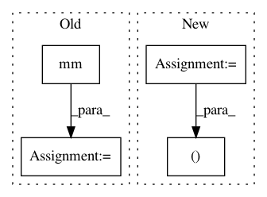

8433f850562b711cb2271bc24c81e1916bb5d48e,torch_geometric/nn/functional/gcn.py,,gcn,#Any#Any#Any#Any#,6
Before Change
// features = tf.multiply(tf.multiply(degree, features), degree)
// features = tf.transpose(features)
output = mm(output, weight)
output += torch.mm(features, weight)
if bias is not None:
output += bias
After Change
def gcn(adj, input, weight, bias=None):
n, m = adj.size()
I = eye(n, m)
adj = adj + I
In pattern: SUPERPATTERN
Frequency: 4
Non-data size: 4
Instances
Project Name: rusty1s/pytorch_geometric
Commit Name: 8433f850562b711cb2271bc24c81e1916bb5d48e
Time: 2017-11-16
Author: matthias.fey@tu-dortmund.de
File Name: torch_geometric/nn/functional/gcn.py
Class Name:
Method Name: gcn
Project Name: Zhaoyi-Yan/Shift-Net_pytorch
Commit Name: 9503fd51007f3c31daa5a8c110c4b090d3644fdc
Time: 2018-12-13
Author: yanzhaoyi@outlook.com
File Name: models/accelerated_shift_net/accelerated_InnerShiftTripleFunction.py
Class Name: AcceleratedInnerShiftTripleFunction
Method Name: forward
Project Name: rusty1s/pytorch_geometric
Commit Name: 4e43734dd0b7f1c026069af64151a8f52f41060d
Time: 2019-07-03
Author: matthias.fey@tu-dortmund.de
File Name: torch_geometric/nn/conv/gat_conv.py
Class Name: GATConv
Method Name: forward
Project Name: cornellius-gp/gpytorch
Commit Name: 22361f98c2c8683715a507f59a5884071d672826
Time: 2017-08-01
Author: jrg365@cornell.edu
File Name: gpytorch/kernels/grid_interpolation_kernel.py
Class Name: GridInterpolationKernel
Method Name: forward